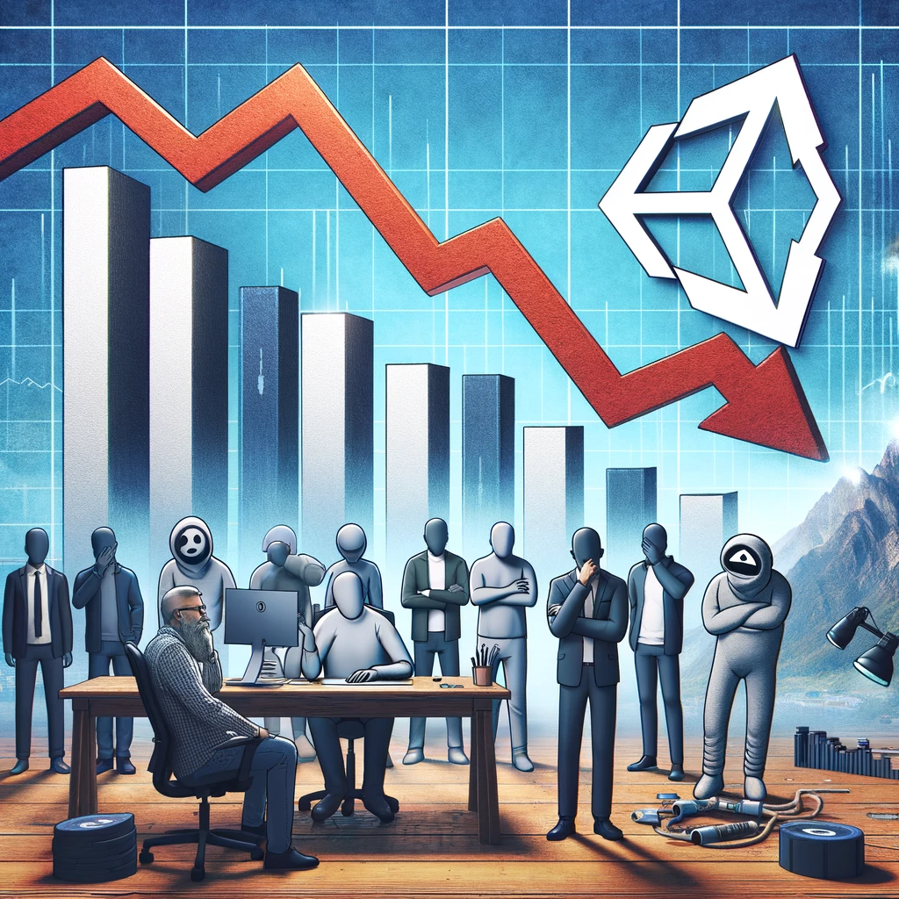

Industry Response to Unity's Pricing Model Change
The shift in Unity's pricing strategy has not just agitated individual developers but has also drawn significant attention and response from the broader game development industry. The collective disapproval of this policy change is a strong indicator of the general dissatisfaction within the industry.
Collective Action Against the New Policy
Following Unity's announcement, several prominent game studios and developers have unified in their opposition. As reported by TipRanks, many have decided to disable Unity Ads monetization in their projects as a form of protest. This collective action is rare in the industry and underscores the depth of discontent with Unity's decision.
Impact on Larger Industry Players
The response goes beyond smaller studios and individual developers. Larger, influential entities in the gaming industry have also raised concerns, adding gravity to the issue. Their collective stance has the potential to significantly influence public perception and market trends, potentially leading to a wider boycott of Unity's services.
Shifting Market Dynamics
This widespread disapproval could lead to a shift in market dynamics, as developers and studios explore and transition to alternative game development platforms. Such a shift could have lasting implications on Unity's market share and industry influence, possibly relegating it to a less competitive position.
The industry's reaction to Unity's pricing model is a pivotal moment, possibly signifying a broader shift in the game development landscape. It reflects the critical importance of aligning business strategies with the needs and preferences of the user base, especially in a community-driven industry.